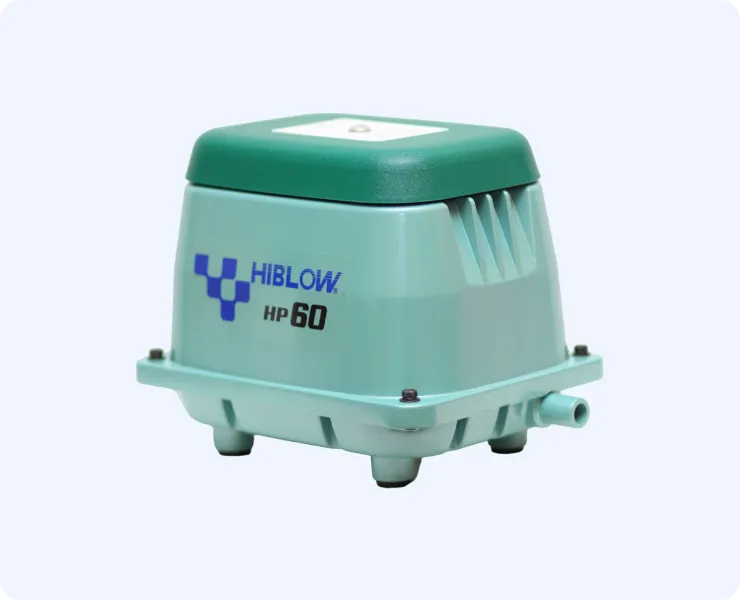

Аэраторы для пруда
Компрессор мембранный HIBLOW HP-60, 60-62 л/мин, 51 Вт, 0.147 Бар
Цена и наличие
- 1 шт.1 083,03 BYN / шт.В наличии
Данные на 23.11.2026.
Характеристики
- Бренд
- Hiblow
- Тип аэратора
- мембранный
- Потребляемая мощность, Вт
- 51
- Производительность, л/мин
- 60-62
- Рабочее давление, МРа
- 0.147
- Вес, кг
- 6.9
- Напряжение, В
- 220
- Страна производитель
- Япония
- Уровень шума
- 35 децибел
Описание
Мини-компрессор (воздуходувка) – это устройство, которое подает воздух в емкость, с целью аэрации.
АЭРАТОР ДЛЯ ПРУДА HIBLOW HP-60 Особенности установки и условий эксплуатации мини компрессора Hiblow HP-60: Компрессор (воздуходувка) – это аппарат, либо система устройств, которые подают обогащенный кислородом воздух в септик или водоем, с целью обогащения их кислородом. За долгие годы производства компрессорного оборудования, компания Hiblow, зарекомендовала себя как лучший и наиболее надежный диафрагмальный (мембранный) компрессор в мире. Компрессор Hiblow HP-60 не имеет конкурентов по соотношению цена – качество и соответственно является лидером среди компрессоров на российском рынке. Данный компрессор для септика имеет самые правдивые динамические показатели работы, а также лучшую, среди конкурентов экономичность и защищенность во время работы. Потребление электричества всего 51 ватт. Исключением и его реальным конкурентом по энергоэффективности является только Hiblow XP-60, который является инновационной разработкой компании Хиблоу, производящей различные линейки компрессоров Hiblow. Компрессоры Hiblow HP-60 не нуждаются в ежемесячном и регулярном сервисном обслуживании, а также специализированном уходе за ними, за исключением чистки фильтра компрессора каждые 6 месяцев, а также замены фильтра на новый каждые 5-7 лет (фильтр компрессора хиблоу 60 расположен в верхней части – под крышкой). Данную процедуру в соответствии с инструкцией Вы можете проводить самостоятельно имея при себе лишь крестовую отвертку и желание сэкономить. Так как загрязнение воздушного фильтра значимо сокращает его срок службы. С 10-15 лет вплоть до гарантийных 3 лет! Устанавливают данные компрессора в самых распространенных очистных сооружениях в нашей стране. Данные сооружения уже рассчитаны на 3-8 человек. Компрессоры Hiblow HP-60 распространены на нашем рынке и занимают примерно 1/4 рынка всех компрессоров. Хиблоу HP-60 устанавливаются в таких системах локальной очистки сточных вод как: Тверь 1П ; Тверь 1ПН ; Тверь 1,2П ; Тверь 1,2ПН ; Тверь 1,5П ; Тверь 1,5ПН ; также их можно устанавливать в станции в которых регламентом указаны компрессор Hiblow HP-40, для более активной аэрационной деятельности микроорганизмов внутри септика. Увеличение мощности в данном случае не влечет за собой негативных последствий как для станции в целом так и для компрессора в частности, ввиду специфичности аэрационных элементов септика Тверь. Также в стандартных станциях глубокой биологической очистки типа экогранд, топас и тд. А в частности в станциях Эко-Гранд 5 , Эко-Гранд 8 , также в станциях Топас 4, Топас 5 , Топас 8. В их разных модификациях: Лонг , Миди , Супер лонг, Пр и других. Компресоры данной модели также используются во всех остальных топазообразных моделях конкурентах типа Топлватера, Био-с, Евробион и других. Компрессоры HIBLOW HP 60 имеют внешнее сходство с Hiblow HP-20 , Hiblow HP-40 и Hiblow HP-80, однако, внутри компрессоры отличаются размером магнитов и катушек, а также диаметром мембран компрессоров Хиблоу. Все компрессоры HIBLOW оснащены системами предохранителей, размыкающего типа. Эти компрессоры также устанавливают в доме и протягивают воздухоносную магистраль из пнд, либо полипропилена при установке септика Тверь. В остальных распространенных топазообразных очистных сооружениях компрессора находятся внутри него в отсеке распределителей воздуха.
ДОПОЛНИТЕЛЬНО
Высокая энергоэффективность Низкий уровень шума Отсутствие вибраций Простота в обслуживании Лучшие показатели по влагозащищенности Лучшее соотношение цена/качество Высокотехнологичная защита от перегрева и перепадов температур